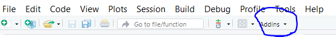
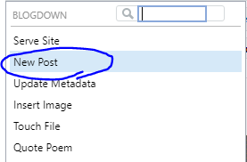
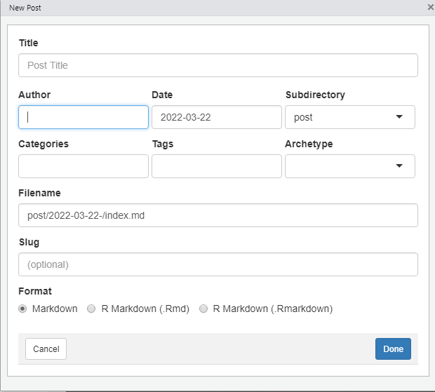

So far you got your Rstudio ready for website shenanigans and learned the basic directory structure and their uses. Now, it’s time to actually make a new post!
At the top left side of Rstudio, you should have something like this:

When you click on “Addins”, you will see this drop down menu. Now select “New Post”.

You can now choose your title and everything! Just be sure to specify the “Subdirectory”, because this will decide which page the post will be put on. General blog posts should go under “post”. Any blog post that isn’t under “post” won’t be displayed in the main page. For the “Format”, it usually doesn’t matter whether you use Markdown or R Markdown, but when you want to embed codes that actually run in your post, use R Markdown.

For example, we can do things like this in R Markdown:
# install.packages("ggplot2")
# install.packages("car")
library(ggplot2)
library(car)
d = carData::Davis
d = d[d$height > 100,]
ggplot(d, aes(x=height, y=weight, color=sex)) +
geom_point()